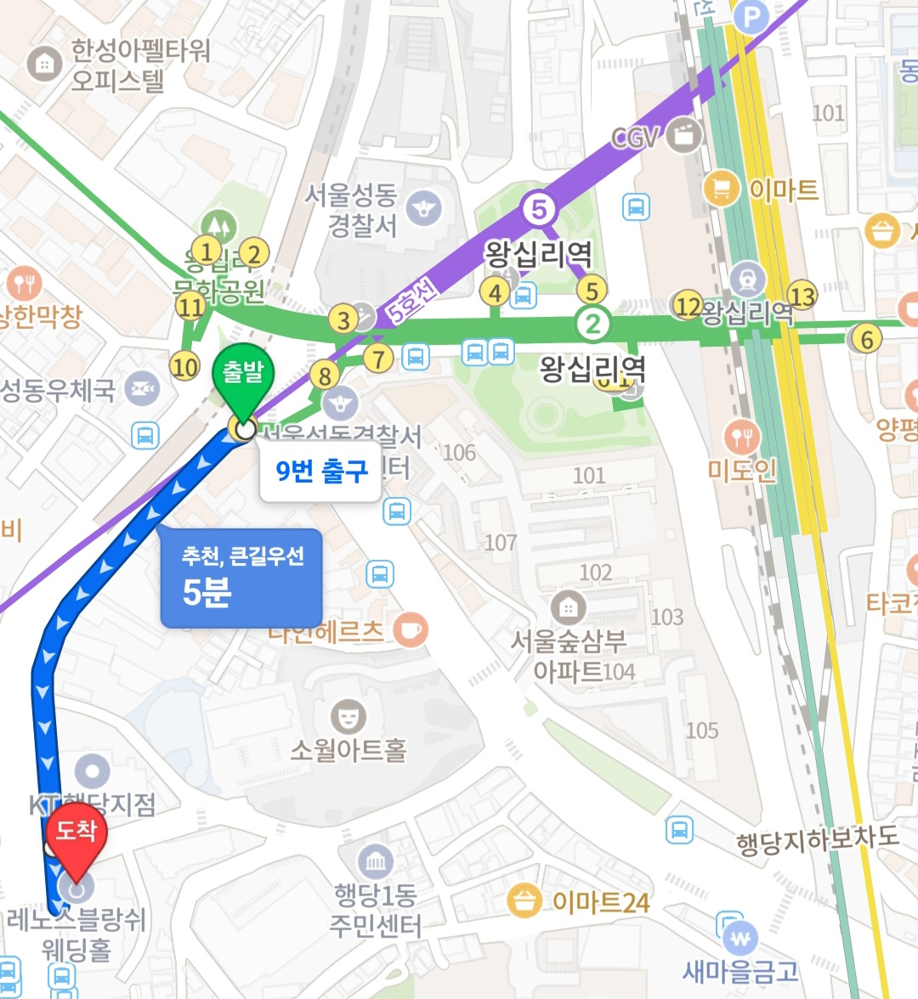

역 내 이동(약 4분)을 포함해 홀까지 약 13분 소요됩니다. 예식이 짧게 진행되오니 시간 여유를 두고 와 주세요.
경로 약도

1
왕십리역 도착
2호선 · 5호선 · 경의중앙선 · 수인분당선
2
9번 출구로 이동 약 4분
왕십리역은 출구가 13개로 내부가 넓고 복잡합니다. 역 내 안내 표지판을 따라 9번 출구를 찾아오세요.
다른 출구로 나오셨더라도 괜찮습니다. 가까운 출구로 나오신 후 9번 출구 방향으로 걸어오시면 됩니다.
3
출구 나와 직진 약 7분
9번 출구로 나와 앞 방향으로 계속 직진합니다.
4
KT 건물 확인
KT 행당지점 건물이 보이면 잘 오고 계신 겁니다. KT 건물을 지나 한 블럭 더 직진해 주세요.
5
레노스블랑쉬 도착
2026 · 11 · 21 (토) 오후 6시
주차 공간이 협소하오니 되도록 대중교통 이용을 부탁드립니다. 부득이하게 자차를 이용하시는 경우 아래 주차장을 이용해 주세요.
주차장 위치 약도
레노스블랑쉬 뒤편 주차장
KT 행당지점과 레노스블랑쉬 사이 골목으로 진입하시면 건물 오른편에 주차장이 있습니다. 지상 주차 및 2층 주차 건물 이용 가능합니다. (2층 주차 건물은 경사가 높아 이용에 불편함이 있을 수 있습니다)